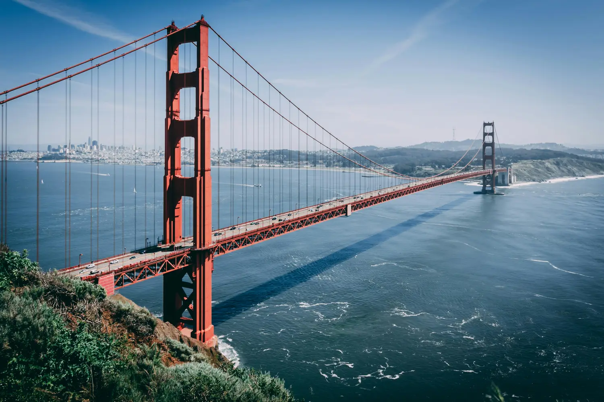

Golden Gate Bridge, San Francisco, USA
Introduction
Welcome to the vibrant city by the bay! San Francisco is a captivating blend of history, culture, and natural beauty. As you cross the majestic Golden Gate Bridge, get ready for an unforgettable adventure.
Must-See Attractions
- Golden Gate Bridge: Start your journey with a walk or bike ride across this architectural marvel. The views of the bay and city skyline are breathtaking.
- Alcatraz Island: Take a ferry to the infamous former prison. Explore its eerie cells and learn about its fascinating history.
- Fisherman’s Wharf: Stroll along the waterfront, visit Pier 39, and say hello to the sea lions. Don’t miss the clam chowder in sourdough bread bowls!
- Chinatown: Immerse yourself in the vibrant colors, flavors, and traditions of the oldest Chinatown in North America.
Things to Do
- Explore Neighborhoods: From bohemian Haight-Ashbury to upscale Nob Hill, each neighborhood has its unique charm.
- Ride the Cable Cars: Hop on a historic cable car and enjoy the scenic ride up and down the city’s steep hills.
- Visit Museums: The de Young Museum, SFMOMA, and the Exploratorium offer art, science, and interactive exhibits.
- Attend a Giants Game: Catch a baseball game at Oracle Park with the iconic Bay Bridge in the backdrop.
Activities and Experiences
- Sunset at Twin Peaks: Drive up to Twin Peaks for panoramic views of the city at sunset.
- Hike Lands End Trail: Explore coastal cliffs, hidden beaches, and the Sutro Baths ruins.
- Bay Cruise: Sail under the Golden Gate Bridge and around Alcatraz Island.
- Street Art Tour in the Mission District: Discover colorful murals and graffiti.
Outdoor Adventures
- Hiking: Head to Muir Woods National Monument for ancient redwood trees or hike in Marin Headlands.
- Water Sports: Kayak in the bay or try windsurfing near Crissy Field.
Cultural Events and Festivals
- San Francisco Pride: Join the vibrant LGBTQ+ community during the annual Pride Parade.
- Outside Lands Music Festival: Enjoy live music, art, and food in Golden Gate Park.
Food and Wine Tours
- Gourmet Food Trucks: Sample diverse cuisines from food trucks parked around the city.
- Napa Valley Day Trip: Take a wine tour to Napa Valley for vineyard visits and tastings.
Shopping Areas
- Union Square: Shop at high-end boutiques and department stores.
- Ferry Building Marketplace: Explore artisanal food stalls and unique shops.
Accommodations
- Luxury Hotels: The Fairmont, The Ritz-Carlton, and Hotel Vitale offer stunning views.
- Boutique Inns: Stay in charming bed-and-breakfasts in Pacific Heights.
Dining and Nightlife
- Seafood: Try cioppino (a seafood stew) or Dungeness crab.
- Mission District: Explore trendy restaurants and bars.
- Craft Cocktails: Sip creative drinks at speakeasies like Bourbon & Branch.
Getting Around
- Public Transportation: Buses, cable cars, and BART (Bay Area Rapid Transit) make getting around easy.
- Bike Rentals: Pedal through Golden Gate Park or along the Embarcadero.
Tips and Essentials
- Layer Up: San Francisco weather can change rapidly, so bring layers.
- Parking: Parking can be challenging; consider using public transportation.
- Reservations: Book Alcatraz tickets and popular restaurants in advance.